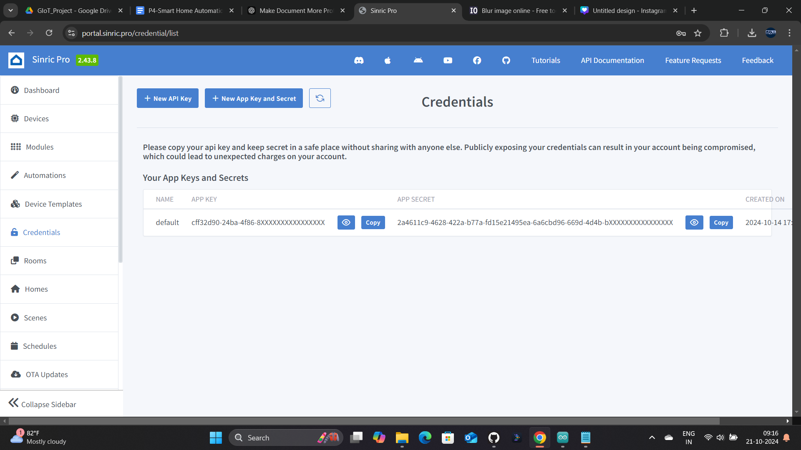
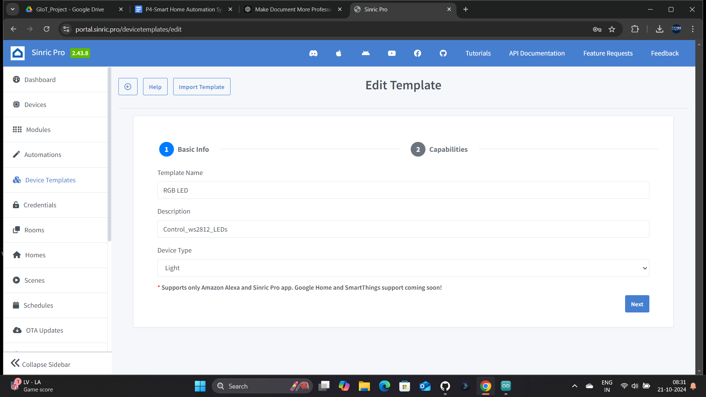
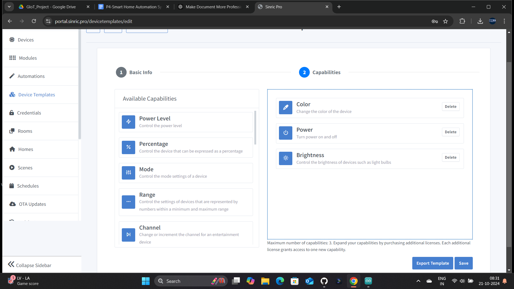
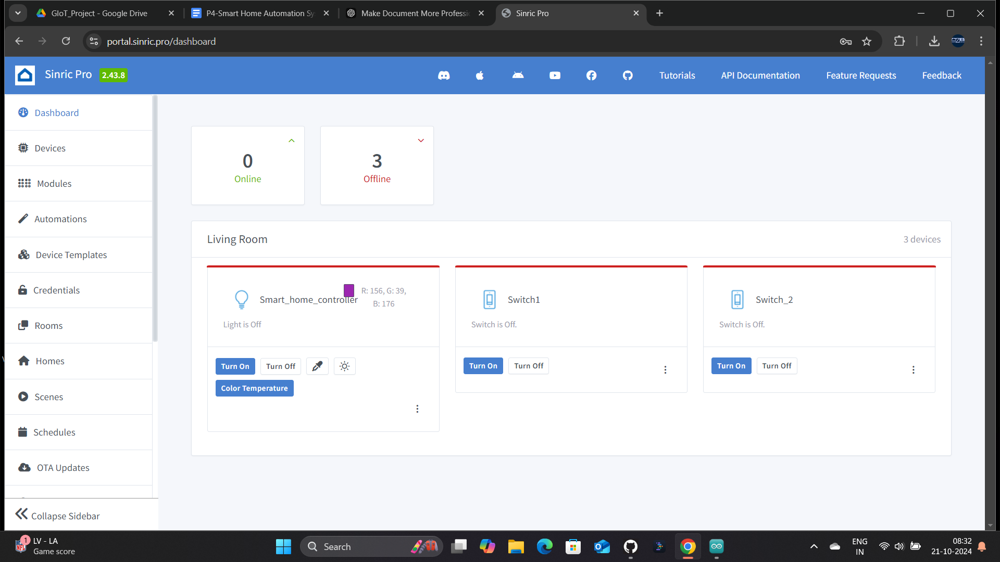

The Smart Home Automation System project allows for remote control of home appliances and lighting through an IoT setup using the ESP32 microcontroller, WS2812 RGB LED, a 2-channel relay, and the Sinric Pro platform. This system integrates the control of both electrical appliances and lights using a mobile app interface, providing users with smart home capabilities. The main focus of the project is to enable smart control using Wi-Fi and the Sinric Pro IoT cloud service.
Go to the Sinric Pro website and create an account.
Navigate to the "Devices" section and create three devices in your Sinric Pro account: one light device for the WS2812 LED, and two switch devices for the relays controlling appliances.
Take note of the App Key and App Secret from the "Credentials" section, as well as the Light Device ID and the two Switch Device IDs from the "Devices" section.
Go to the "Device Template" section and add a new device template.
Fill in the basic information.
Add the relevant capabilities to each device.
The Sinric Pro setup is now complete
Go to Sketch > Include Library > Manage Libraries, then search for and install:
#include
#include "SinricPro.h"
#include "SinricProLight.h"
#include "SinricProSwitch.h"
#include "ESP32_WS2812_Lib.h"
#include "credential.h"
#define LEDS_COUNT 1
#define LEDS_PIN 15
#define CHANNEL 0
#define sw1 2
#define sw2 4
ESP32_WS2812 strip = ESP32_WS2812(LEDS_COUNT, LEDS_PIN, CHANNEL, TYPE_GRB);
#define WIFI_SSID SSID
#define WIFI_PASS PASS
#define APP_KEY APP_KEY // Should look like "de0bxxxx-1x3x-4x3x-ax2x-5dabxxxxxxxx"
#define APP_SECRET APP_SECRET // Should look like "5f36xxxx-x3x7-4x3x-xexe-e86724a9xxxx-4c4axxxx-3x3x-x5xe-x9x3-333d65xxxxxx"
#define LIGHT_ID LIGHT_ID // Should look like "5dc1564130xxxxxxxxxxxxxx"
#define Switch_ID_1 Switch_ID_1
#define Switch_ID_2 Switch_ID_2
void setupWiFi() {
Serial.printf("\r\n[+]: Connecting");
WiFi.begin(WIFI_SSID, WIFI_PASS);
while (WiFi.status() != WL_CONNECTED) {
Serial.printf(".");
delay(250);
}
IPAddress localIP = WiFi.localIP();
Serial.printf("connected!\r\n[WiFi]: IP-Address is %s\r\n", localIP.toString().c_str());
}
bool powerState;
int globalBrightness = 25;
bool onPowerState(const String &deviceId, bool &state) {
powerState = state;
if(deviceId == LIGHT_ID){
if (state) {
strip.setBrightness(map(globalBrightness, 0, 100, 0, 255));
strip.setLedColor(0,255,255,255);
} else {
strip.setBrightness(0);
}
strip.show();
}else if(deviceId == Switch_ID_1){
digitalWrite(sw1, !state);
}else if(deviceId == Switch_ID_2){
digitalWrite(sw2, !state);
}
return true; // request handled properly
}
bool onBrightness(const String &deviceId, int &brightness) {
Serial.println(brightness);
globalBrightness = brightness;
strip.setBrightness(map(brightness, 0, 100, 0, 255));
strip.show();
return true;
}
bool onColorTemperature(const String &deviceId, int &temp_color) {
Serial.println(temp_color);
switch(temp_color){
case 2200: //warm white
strip.setLedColor(0, 255, 115, 23);
Serial.println("warm white");
break;
case 2700://incandescent Soft White
strip.setLedColor(0, 255, 139, 39);
Serial.println("incandescent Soft White");
break;
case 4000://White
strip.setLedColor(0, 255, 218, 122);
Serial.println("White");
break;
case 5500: //Daylight White
strip.setLedColor(0, 248, 255, 183);
Serial.println("Daylight White");
break;
case 7000: //Cool White
strip.setLedColor(0, 228, 255, 255);
Serial.println("Cool White");
break;
}
strip.show();
return true;
}
bool onColor(const String &deviceId, byte &r, byte &g, byte &b) {
strip.setLedColor(0, r, g, b);
Serial.print("red:");
Serial.print(r);
Serial.print(" green:");
Serial.print(g);
Serial.print(" blue:");
Serial.println(b);
strip.show();
return true;
}
void setupSinricPro() {
// get a new Light device from SinricPro
SinricProLight &myLight = SinricPro[LIGHT_ID];
SinricProSwitch &mySwitch1 = SinricPro[Switch_ID_1]; // create new switch device
SinricProSwitch &mySwitch2 = SinricPro[Switch_ID_2]; // create new switch device
mySwitch1.onPowerState(onPowerState);
mySwitch2.onPowerState(onPowerState);
// set callback function to device
myLight.onPowerState(onPowerState);
myLight.onBrightness(onBrightness);
//myLight.onAdjustBrightness(onAdjustBrightness);
myLight.onColorTemperature(onColorTemperature);
myLight.onColor(onColor);
// setup SinricPro
SinricPro.onConnected([](){ Serial.printf("Connected to SinricPro\r\n"); });
SinricPro.onDisconnected([](){ Serial.printf("Disconnected from SinricPro\r\n"); });
//SinricPro.restoreDeviceStates(true); // Uncomment to restore the last known state from the server.
SinricPro.begin(APP_KEY, APP_SECRET);
}
void setupLED() {
strip.setBrightness(map(globalBrightness, 0, 100, 0, 255));
strip.setLedColor(0, 255, 255, 255);
strip.show();
}
void setup() {
Serial.begin(115200);
pinMode(sw1,OUTPUT);
pinMode(sw2,OUTPUT);
digitalWrite(sw1, HIGH);
digitalWrite(sw2, HIGH);
setupLED();
strip.begin();
setupWiFi();
setupSinricPro();
}
void loop() {
SinricPro.handle();
}
Connect your ESP32 to the computer via USB and upload the code to the board.
This Smart Home Automation System enables users to control home appliances and lighting through a Wi-Fi-connected ESP32 and Sinric Pro platform. The system provides a user-friendly interface for controlling devices, making it ideal for smart home integration.